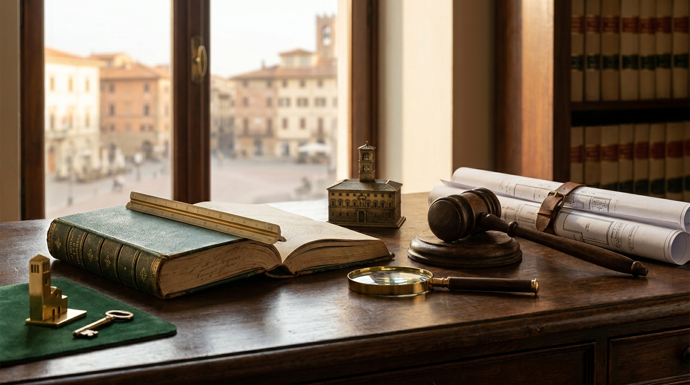

Condominio: spese, assemblee e gestione secondo le regole aggiornate
La gestione del condominio resta una delle aree più conflittuali del diritto privato. Tra ripartizione delle spese, validità delle assemblee e responsabilità dell'amministratore, il Codice Civile fissa regole precise che la giurisprudenza continua a precisare. Vediamo i punti fermi normativi e le indicazioni operative per condomini e amministratori, evitando errori che costano impugnazioni e contenziosi.

Parti comuni e presunzione di comunione (art. 1117 c.c.)
Il punto di partenza è l'art. 1117 c.c.: suolo, fondazioni, muri maestri, tetti, scale, androni, cortili e impianti centralizzati si presumono di proprietà comune di tutti i condomini, salvo che il titolo disponga diversamente.
La formula "salvo titolo" non è di stile. Significa che, per sottrarre un bene alla comunione, occorre un atto scritto specifico (in genere il regolamento di natura contrattuale o l'atto di acquisto). In assenza, la presunzione opera e ogni iniziativa unilaterale su quei beni è destinata a essere contestata.
Ripartizione delle spese condominiali (artt. 1123 e 1125 c.c.)
Le spese seguono il criterio dell'utilità e della proprietà. L'art. 1125 c.c. disciplina un caso ricorrente di conflitto: la manutenzione di soffitti, volte e solai che separano due piani.
La norma ripartisce la spesa in parti uguali tra il proprietario del piano superiore e quello del piano inferiore. Con una precisazione spesso ignorata: la copertura del pavimento resta a carico del proprietario del piano superiore, mentre l'intonaco, la tinta e la decorazione del soffitto gravano sul proprietario del piano sottostante. È una ripartizione di dettaglio che evita liti, se applicata correttamente in delibera.
Obblighi dell'amministratore di condominio (artt. 1129, 1176 e 1710 c.c.)
L'amministratore agisce in forza di un mandato. L'art. 1710 c.c. impone di eseguirlo con la diligenza richiesta; il parametro concreto è quello dell'art. 1176 c.c., che al primo comma richiama la diligenza del buon padre di famiglia, ma al secondo comma eleva lo standard a diligenza professionale quando la prestazione attiene all'esercizio di un'attività qualificata. L'amministratore che opera in forma professionale risponde quindi secondo un metro più severo: non basta la buona fede, serve competenza tecnica e organizzativa.
Gli obblighi specifici sono elencati all'art. 1129 c.c.: conto corrente condominiale dedicato, rendiconto annuale, comunicazione dei dati anagrafici e fiscali. La loro violazione non è un'irregolarità formale. L'art. 1129, commi 11 e 12, c.c. individua le cause di revoca giudiziale dell'amministratore: tra queste, la mancata apertura del conto dedicato, l'omessa convocazione dell'assemblea per l'approvazione del rendiconto, le gravi irregolarità nella gestione e la mancata comunicazione di liti in corso.
Validità dell'assemblea e impugnazione delle delibere (art. 1137 c.c.)
La delibera assembleare è vincolante per tutti i condomini, anche dissenzienti e assenti. Chi intende contestarla deve agire entro un termine perentorio: 30 giorni ex art. 1137 c.c., decorrenti dalla deliberazione per i presenti e dalla comunicazione del verbale per gli assenti.
Il termine vale però solo per le delibere annullabili (vizi formali, di convocazione, di calcolo dei quorum). Le delibere nulle — per oggetto impossibile o illecito, per lesione di diritti individuali sulle parti comuni, per incompetenza dell'assemblea — sono impugnabili senza limiti di tempo. La distinzione, ribadita dalle Sezioni Unite (sent. n. 9839/2021), è decisiva: confondere nullità e annullabilità significa spesso perdere la possibilità di reagire per decorso del termine.
Spese urgenti anticipate dal singolo (art. 1134 c.c.)
Il condomino che anticipa una spesa per le parti comuni ha diritto al rimborso solo se ricorre l'urgenza prevista dall'art. 1134 c.c. La giurisprudenza interpreta l'urgenza in senso restrittivo: non basta l'opportunità o la convenienza, occorre che l'intervento non possa essere differito senza danno, cioè che non vi sia il tempo materiale di convocare l'assemblea o di interpellare l'amministratore.
Fuori da questa ipotesi, l'iniziativa unilaterale resta a carico di chi l'ha assunta. Chi spende "di propria iniziativa" confidando in un rimborso automatico rischia di restarne privo.
Cosa fare in concreto
- Verifica il titolo prima di rivendicare la proprietà esclusiva di un bene: senza atto scritto, opera la presunzione di comunione ex art. 1117 c.c.
- Applica correttamente l'art. 1125 c.c. nella ripartizione di solai e soffitti, distinguendo pavimento e intonaco; mettilo a verbale.
- Controlla gli adempimenti dell'amministratore (conto dedicato, rendiconto, comunicazioni): la loro assenza è causa di revoca ex art. 1129, commi 11 e 12, c.c.
- Rispetta i 30 giorni dell'art. 1137 c.c. per impugnare le delibere annullabili; valuta subito se il vizio integra nullità o annullabilità.
- Documenta l'urgenza prima di anticipare spese sulle parti comuni: senza i presupposti dell'art. 1134 c.c. il rimborso non è dovuto.
Ogni situazione condominiale presenta variabili specifiche — regolamento, titoli di proprietà, contenuto dei verbali — che richiedono una valutazione caso per caso.
Ogni condominio ha una storia a sé.
Se gestisci un'amministrazione e vuoi un confronto su una specifica questione condominiale, scrivi allo studio. Ti rispondiamo entro un giorno lavorativo.